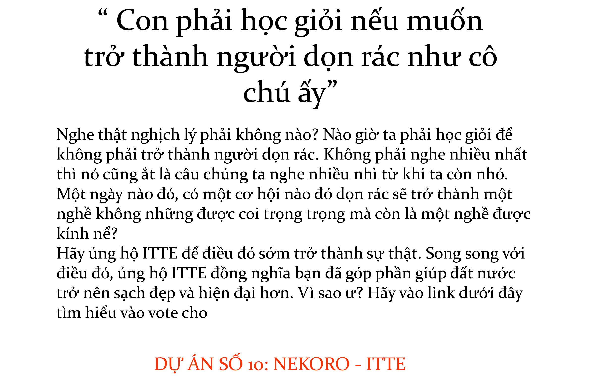
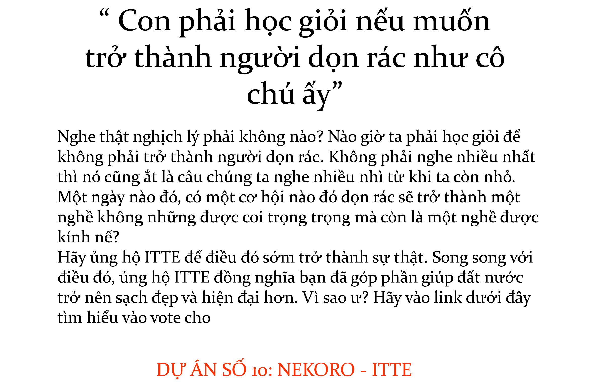
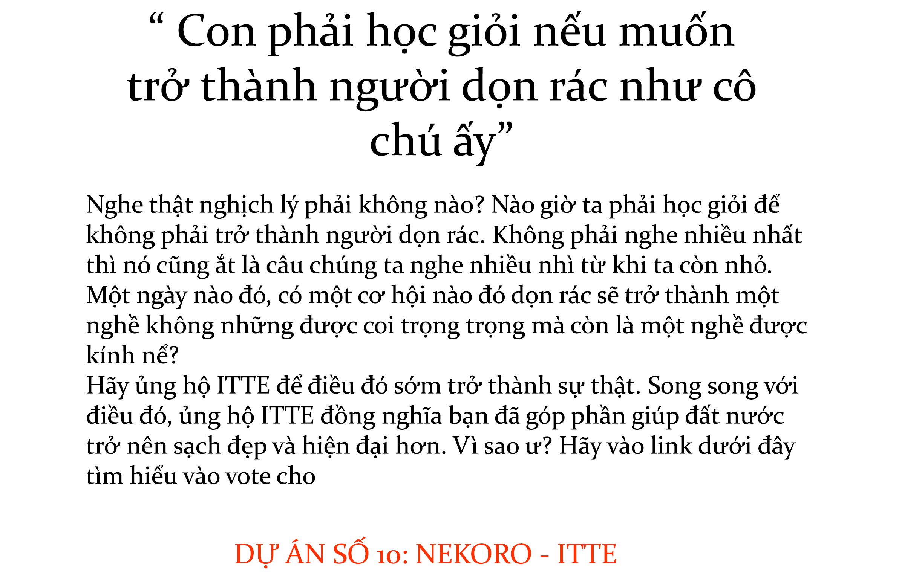
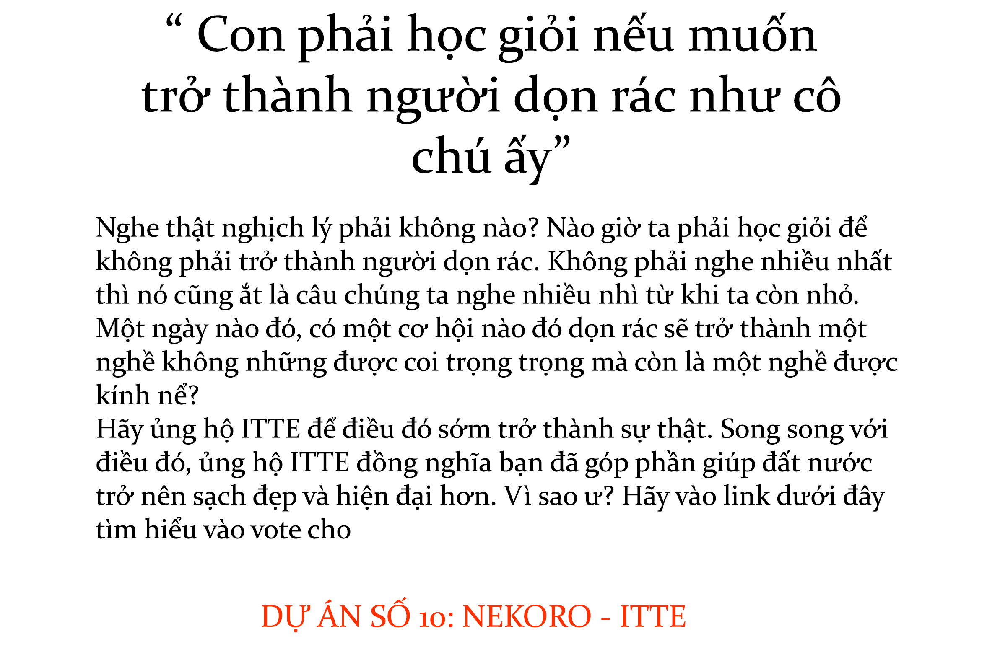

|
Ý tưởng của dự án Nekoro xuất hiện từ hiện tượng thực tế: Trong quá trình chuyển đổi số, việc thúc đẩy người dân sử dụng nền tảng số trong các hoạt động thường ngày là một việc nên làm. Mọi người giờ đây đã có thể thanh toán tiền điện, cước viễn thông, mua hàng tiện lợi bằng app ngân hàng và ví điện tử như Momo, VNPT Pay... nhưng tiền rác vẫn phải cho người đến từng nhà thu ?! Bên cạnh đó còn có những nguyên nhân phụ như ngày mưa sẽ gặp khó khăn khi dọn và nhiều vấn đề bất cập khác thường xuyên phát sinh. Nếu chuyển đổi sang một mô hình được tự động hóa chạy bằng máy móc, tỉ lệ thường trực làm việc sẽ cao hơn. Với một đất nước đang phát triển như Việt Nam, du lịch cũng góp phần quan trọng trong việc quảng bá đất nước và tăng nguồn thu. Cảnh quan luôn sạch đẹp sẽ giúp bộ mặt nước nhà đẹp hơn trong mắt người đến thăm. Cốt lõi của dự án sẽ là những con robot, còn gọi là Nekoro. Đây là những con robot hoạt động cơ khí đơn giản, được quản lí bằng server từ xa. Nekoro sẽ được triển khai theo quy mô lớn để đạt được hiệu quả cần thiết. Thời gian đầu Nekoro sẽ được triển khai thử nghiệm trong phạm vi làng Đại học để vừa cải thiện và sửa lỗi, vừa thu thập cho Nekoro “học” dọn rác. Startup sẽ liên hệ và phối hợp với những công nhân dọn rác đang hoạt động giúp Nekoro học cách dọn dẹp và phân loại rác từ họ. ITTE sẽ trả tiền làm thêm cho họ khi gián tiếp ảnh hưởng đến năng suất làm việc của họ. Chính những người thu tiền rác khu vực sẽ quảng cáo để mọi người chuyển đổi sang hình thức mới Quan trọng nhất sau Nekoro là hệ thống quản lí. Sau khi hoàn thành những nguyên mẫu đầu tiên, chúng tôi sẽ xây dựng một server cơ bản để quản lí robot trước. Về sau sẽ nâng cấp hạ tầng giúp robot có khả năng “tự học” dọn hiệu quả hơn. Mục tiêu quan trọng khi design Nekoro nhắm đến nó phải thân thiện với mọi người, vẫn đảm bảo hiệu quả và cân bằng giá thành. Nekoro sẽ xây dựng mối quan hệ với khách hàng như một người bạn hỗ trợ dọn dẹp, giúp họ thuận tiện hơn trong cuộc sống như giải quyết hoá đơn định kì cuối tháng. Ngô Tạ Đình Phong Võ Đông Quân Nguyễn Huỳnh Tuyết Vi Lê Nguyễn Quang Duy Trần Nhật Viên |
video giới thiệu dự án NEKORO :
Youtube